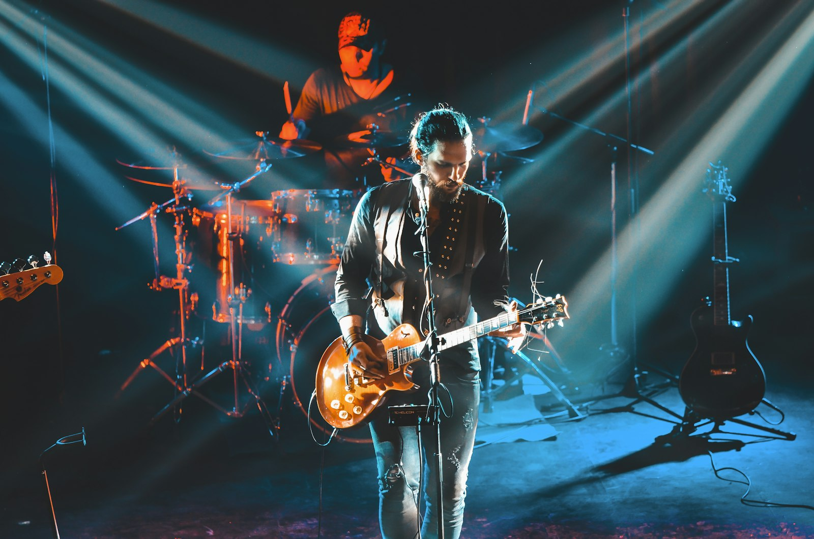
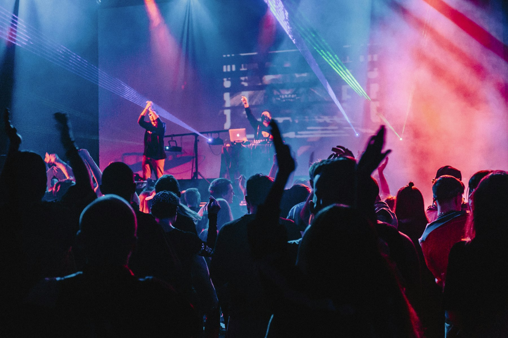
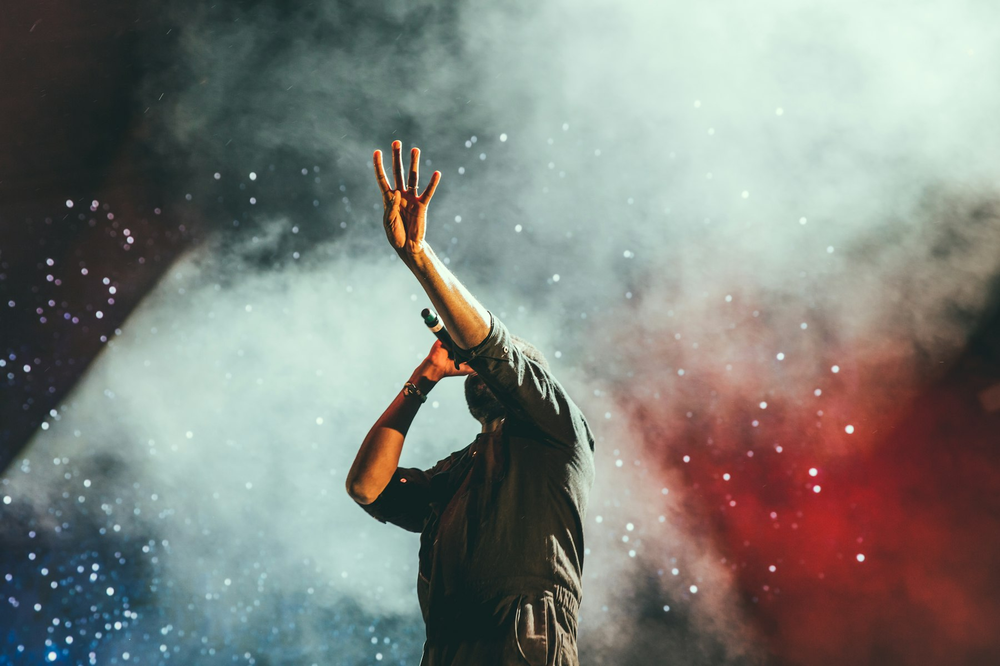
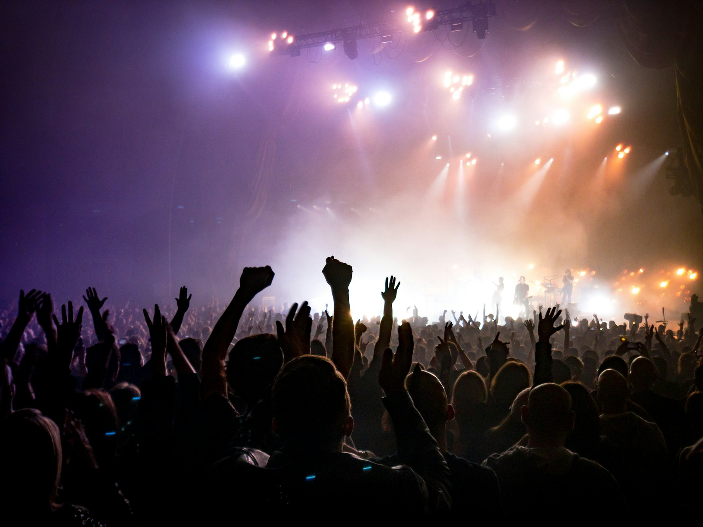

Open slot · Live
Raw performances
Full rooms, live vocals, and the take that happens when the song is still breathing.
Sessions
Same Streets Sessions is a chance to experience music a little differently.
Raw performances, unexpected arrangements, and conversations with the artists behind the songs.

Featured session
Coming online
The artist, the performance, and a short introduction will live in this frame. Until the first cut is ready, the room is open.
Session library
Discover performances from artists making music in our community and beyond.
Open slot · Live
Full rooms, live vocals, and the take that happens when the song is still breathing.
Open slot · Acoustic
Songs pulled apart and played closer than the recording ever got.
Open slot · Conversation
A little time with the artist, not just the chorus.
Open slot · Stripped
Less production. More of the person who wrote it.

Open slot · Live
A record of the night that doesn't sand off the room.

Open slot · Spotlight
Artists making music worth hearing, given more than a few seconds.
Artist spotlights
We believe discovering an artist should mean more than hearing thirty seconds of a song. Our spotlights introduce the people behind the music, the things that drive them, and the stories worth sharing.
New voices
Musicians the room hasn't met yet, with songs that already know where they're going.
Familiar faces
Artists this community already loves, given a different kind of room.

More attention
Sounds that deserve more than a skip, a scroll, or a half-finished chorus.
Artist invitation
We're always looking for artists with something to share.
You don't need a huge following, a record deal, or a perfect production.
You need music you believe in.
There is no fee to apply or be selected for a Same Streets Session or artist spotlight.
Participation is subject to selection and scheduling availability.